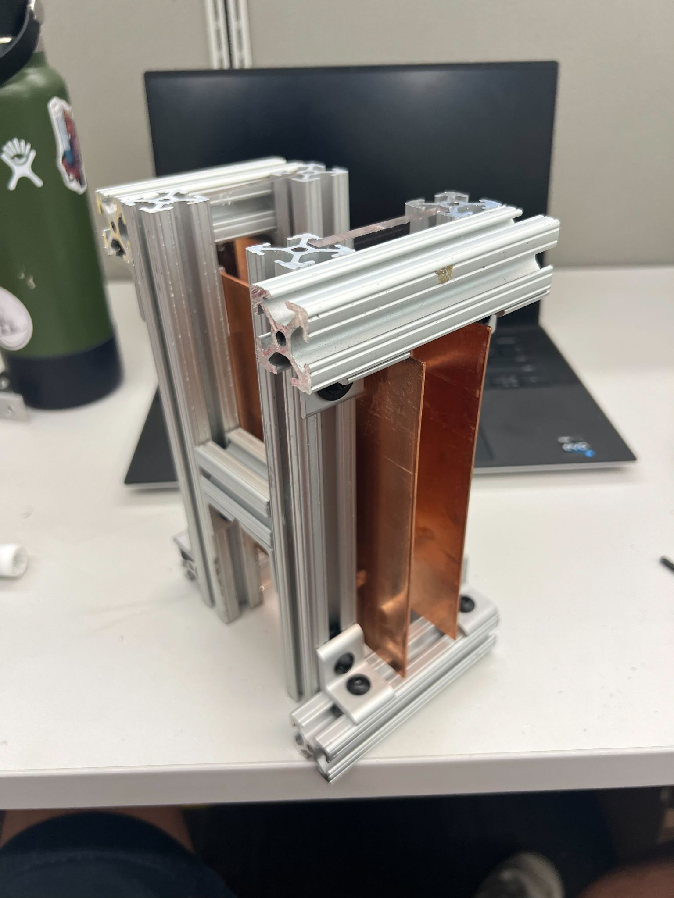
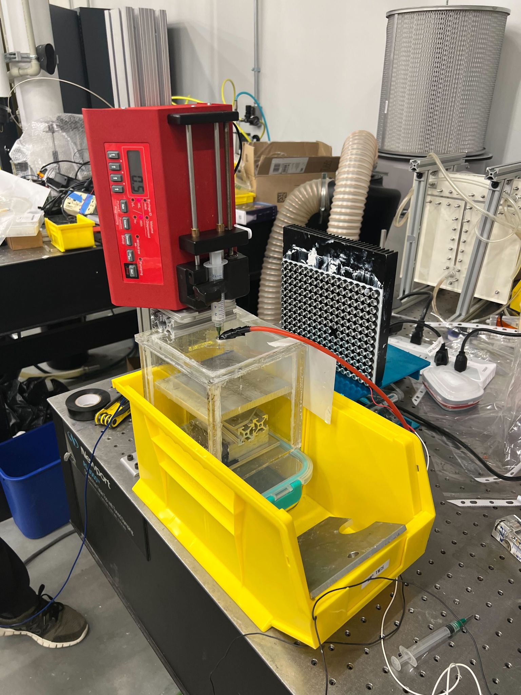
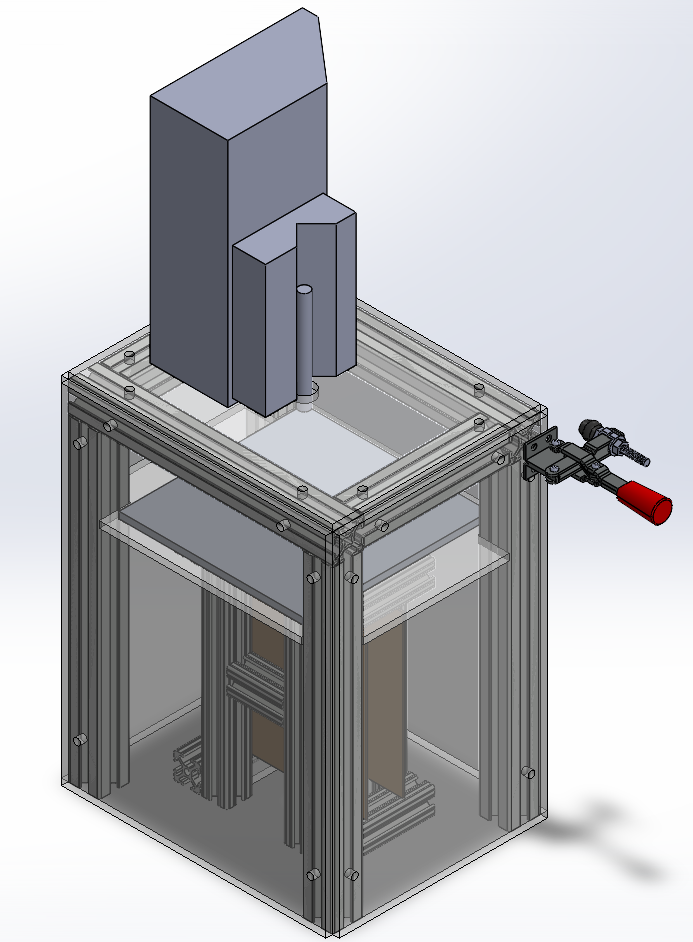
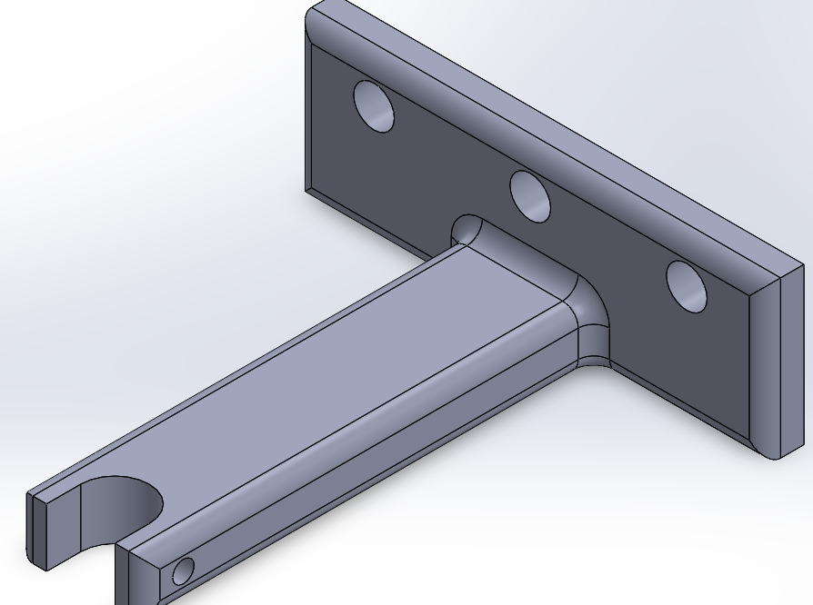
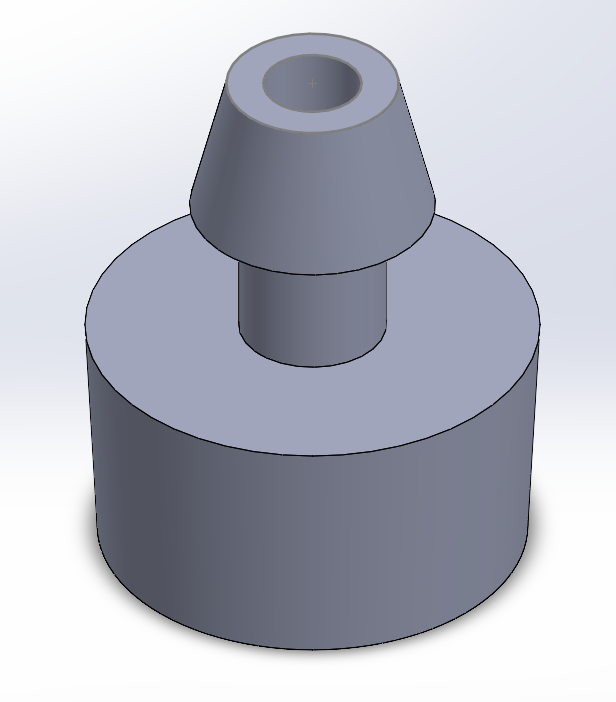

Electrospray Apparatus
Description
The purpose of this project is to create an apparatus that can be used to charge microscopic liquid particles of a fixed size (between 20-40 microns). In order to determine the experimental charge and size of particles, there are 2 main chambers in the apparatus. The top chamber is where the traditional electrospray apparatus is, and here the size of the particles is measured. Below in the second chamber is used to determine the charge of the particles. This device is to be implemented onto a larger chamber to dispense liquid particles of equal and opposite charge into it. There, fans are used to concentrate the particles in the center of the chamber, where we will attempt to create an electric discharge between the oppositely charged particles using turbulence.
How it works
To charge the particles high voltage power supply is connected directly to a syringe that is connected a syringe pump. Opposite of the syringe is an electrode, which is a grounded aluminum plate. There is a hole in the electrode, which allows the particles to enter the next chamber with a parallel plate assembly, which are charged to create an electric field which deflects the falling particles. The particles’ trajectory is recorded using a High Speed Camera, and a Dynamics analysis in Matlab is used to determine the charge of the particles.
Construction
The design is comprised of 80/20 rails with a 30mmx30mm profile for the structure, and a combination of 1/4” and 1/8” thick acrylic sheets to make panels. Inside of the assembly there is an electrode made of an aluminum plate.



CAD Models


